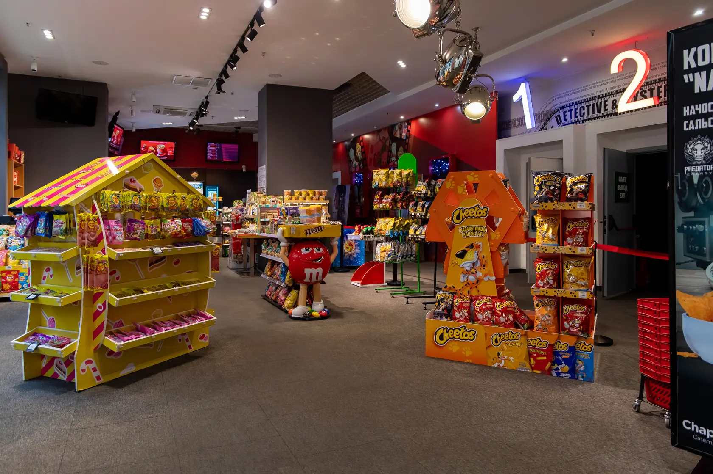
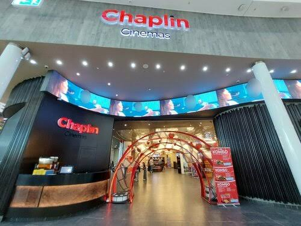

Simple steps
- Choose a movie.
- Check age limit.
- Check language.
- Check time.
- Find the cinema in MEGA Silk Way.
Chaplin Mega Silk Way
Chaplin Mega Silk Way is inside MEGA Silk Way in Astana. Before submission, we will check the exact address and phone number. Visitors should also check the latest movie time before they go.
Email: info@chaplin.kz
Insta: chaplincinemas


HTML is the language used for this page.
Important: check real information. Real data is needed. Bold and italic are examples. H2O and x2 show text formats.
This page was made by Nauryzbay.